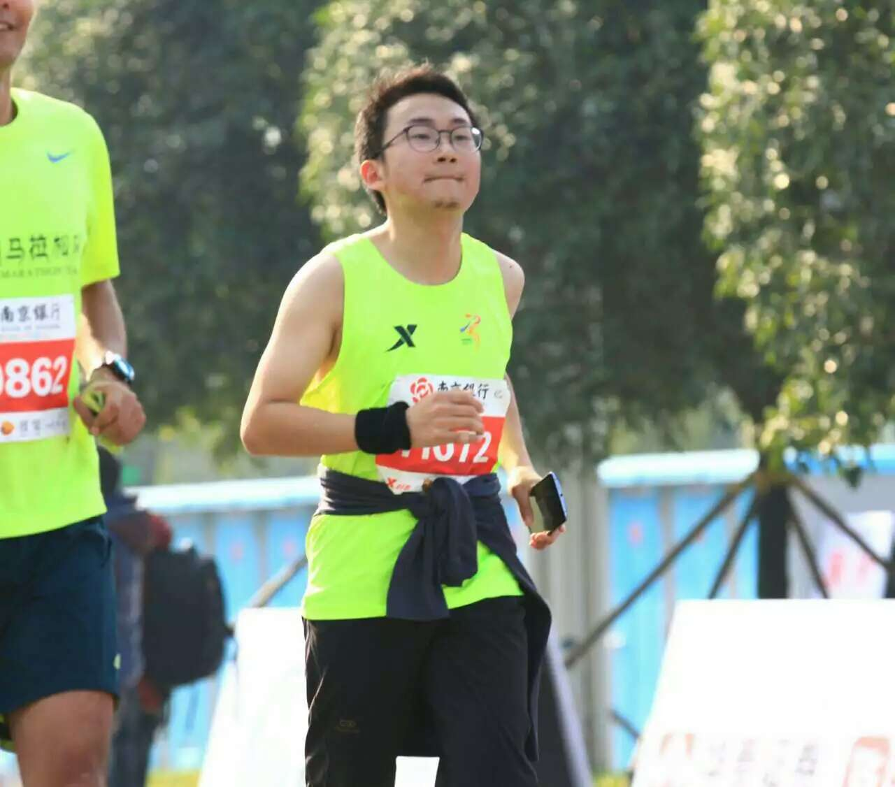

我 about me
| 姓名 | 王彬 |  | |
| 电子邮箱 | wb@dearmr.wang | ||
| 手机号 | 15605160158 | ||
| 学校 | 南京航空航天大学 | ||
| 学历： | 本科（2014届） | 专业： | 自动化 |
| 英语四级/六级： | 591/553 | IELTS（雅思）： | 6.5 |
项目经历 research experience
| 项目 | 类型 | 概述 |
| 雷猴红包 | 业余偷乐，发红包的小玩具 | NGINX + Node.js作服务端，前端使用jQuery＋Materialize， MongoDB作数据库。写作主要目的是体验web上的Material Design。过年在家写的，时间少，诸多疏漏。代码 |
| 吱声 | 一个同时管理微博和人人账号小工具，用了KISSY的waterfall组件展示用户两个社交平台的信息，并且可以同时发布到两个平台 | 大四时在学校写的，非典型LAMP，PHP没有使用框架，主要目的是为了学习PHP和JavaScript，也体验了一把AngularJS和KISSY。上线两个月时间，只有百来个用户，遂关闭。 |
| Git Auto Configure | 在公司里业余写的一个小工具，用户输入Linux登录IP、用户名和密码，选择Git版本，工具会自动登录Linux、安装和配置Git。 | 前端使用了一个叫MUI的轻量级lib，服务端仍然是Node.js+MongoDB。用户表单输入存入待处理队列，另一个Node定时处理捞取数据、调用Linux的Expect脚本登录到对方Linux并安装Git，在Linux上用wall输出安装进度 |
| RFC 一致性检查工具 | 搜索引擎风格的界面，用户通过关键字检索，根据用户输入判断当前华为V8系统与RFC标准是否一致。 | 到公司实习业余做的一个工具，把团队用表格管理的RFC一致性数据转移到MongoDB，组织所在团队每天晨会Review代码对RFC的实现，更新数据库，算是工作后第一次主导一个小项目。 |
公益项目 charity campaign
| 项目 | 角色 | 活动概述 |
| “冬日暖阳，爱传青海” | 发起人（视频链接） | 2012年元月发起“冬日暖阳，爱传青海”公益活动，开发募捐平台nanjingren.im，为青海果洛州玛沁县吉美坚赞学校募集近千件过冬衣物，受到《南京零距离》、《非常了得》栏目多次报道，在学校当时也是一次活动很次影响力的公益活动。 |
| “格桑花开，爱传青海” | 发起人（视频链接） | 2012年七月发起“格桑花开，爱传青海”项目，得到江苏卫视《非常了得》栏目两万元爱心基金，被江苏城市频道跟踪报道，同时在南京市南昌路小学、长江路小学及多个社区举办公益展览，活动共收到社会各界近三千本图书捐赠，为青海省尖扎县措干口完全小学建立图书室； |
| 在学校时做这些公益项目，一方面出于帮助别人的本能、向周围人传播我个人的价值观，另一方面也是积累了“项目经验”，计划执行、风险管理、团队协作，对我在工作中作为项目经理也提供了不少经验和借鉴。 | ||
自述 self intro.
曾经追逐过自己的文艺梦，到现在还深爱着电影和文学，曾经拿到了南京大学戏剧影视文学专业提前录取资格，对审美有自己的执着和追求。
也曾想过做个科研狗，大学入学我就被选拔到工科强化班，参加过几次电赛，花一年时间做过两个大的嵌入式项目，喜欢折腾ARM。
爱上前端可能始于大一时帮别人做Flash，从ActionScript最终到JavaScript，喜欢上了自己写些东西。其间由于折腾了一段时间硬件，对JS的热情被荒废掉了。大四时又开始学web开发，算是真正着了自己热爱的方向：我要前端。毕业季找工作，前端拿到offter的都是不想去的公司，于是到了现在岗位，目前时做IPv6协议的开发，主要擅长邻居发现、主机收发等特性。
实践过Node.js + NGINX, LAMP, MongoDB, Redis, 并正在努力更加深入理解它们，熟悉响应式布局，js在触屏设备上的体验，也了解过Grunnt, Less, Material Design, AngularJS以及KISSY等等，由于工作压力大，很多只是浅尝辄止.
对于前端一直在关注，从没放弃做个前端大牛的梦想。与其和前端暧昧，不如一心一意把她来追。现在所从事的工作虽然对于将来做前端没有太多直接帮助，但是两年的职场锻炼，我的开发能力、项目经验得到提升。